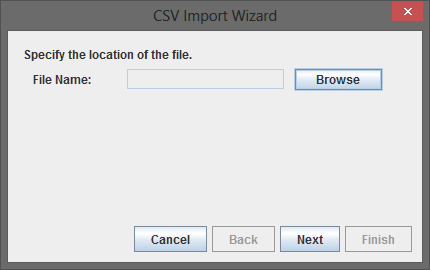
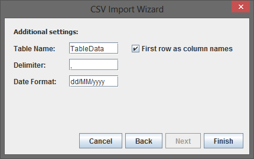
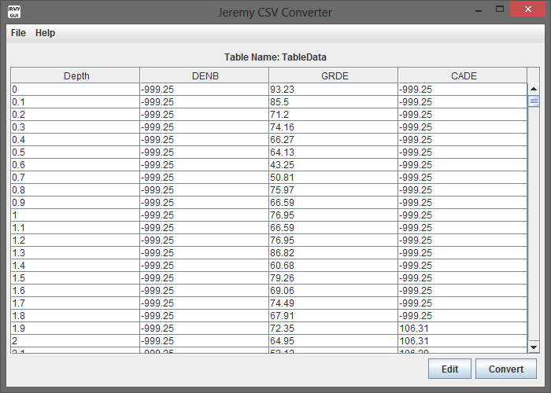
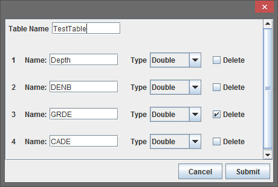
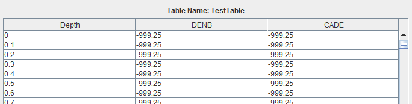
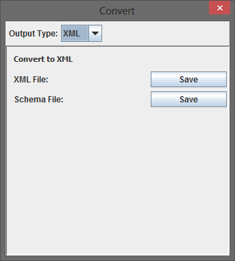
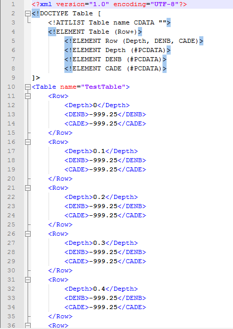

CSV to XML Conversion Tutorial
Stage 1: Import a CSV File
Open the File menu and click the Open... menu option. This will open the CSV Import Wizard.

In this tutorial we are going to be using the LasData.csv file located in the testdata folder that came with the application. Once the Wizard has opened click the browse button and open the LasData.csv file. Click the next button to move to the next step in the Wizard.
This step allows us to set the properties for the CSV conversion. Set the table name as "TableData" and click the First row as column names checkbox. If we were importing a CSV file that seperated it's data entries with a period instead of a comma we would make that change on this screen. Click the Finish button to complete the import.
As shown below you should now see that the data has been inserted into a table. Click the edit button to move onto the next stage of this tutorial.
Stage 2: Modify the Imported Data
We can perform several useful operations with this window: rename the table, rename individual columns, delete columns and set a columns data type. For this tutorial we want to delete the "GRDE" column and rename the table to "TestTable". To do this check the appropriate Delete checkbox as shown below and replace the TableName with "TestTable". Click the Submit button.
Your table on the main screen should now look like the one below. We can see that the Table Name is "TestTable" and that we now only have 3 columns instead of 4.
Stage 3: Export as an XML Document
This is barely a step at all. Converting to XML or JSON at this point is really easy. All you have to do is select your output type with the drop down menu and click the save button to generate your required file.
Click the Save button next to the XML File label. Save it somewhere that you can easily find again. To check that this file has converted successfully open it in any editor or browser compatible with XML files. It should look like the one below.
If yours looks like the image above then you have done everything correctly and you now have a basic understanding of the Jeremy Converter works.